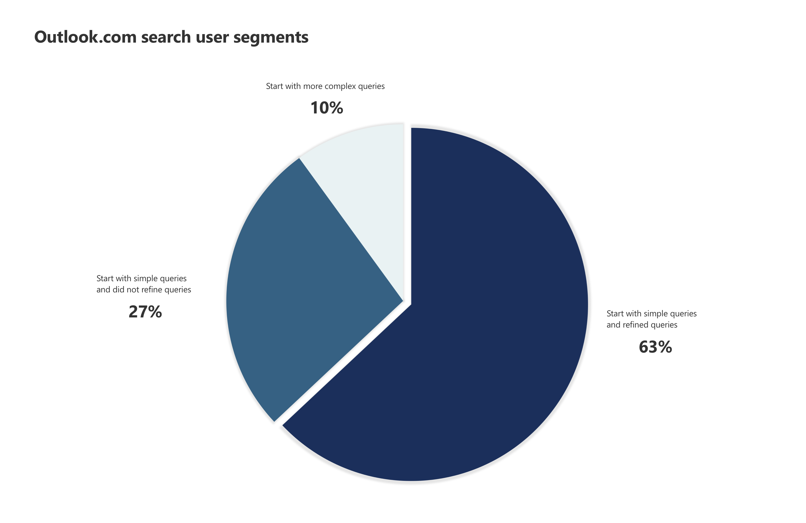
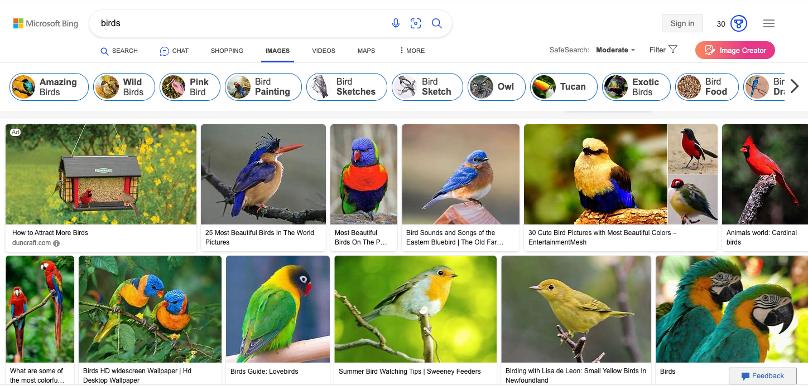

Outlook.com Search Improvements
- Role: Senior Product Manager
- Responsibilities: Feature incubation, feature design (with designers), and feature specing.
- Year: 2019
Outcomes:
- Advanced search and Interactive guided search features used by 400 million users.
- Advanced search feature converted one enterprise customer from Gmail to Outlook.com when I was with the team.
- Interactive guided search feature increased Search Success Rate by 3.6%.
- Interactive guided search feature reduced Time to Success by 2.2%.
- Interactive guided search feature Increased Outlook.com search SUS by 12 points.
Background
The Outlook team was pushing enterprise customers to adopt Outlook.com when I joined. The enterprise rollout began about one year ago. The progress has been slow given the product has not reached desktop Outlook feature parity. One of the top adoption friction areas was search.
As the product owner of Outlook.com search, my goal was to accelerate enterprise adoption and to lead the long-term strategy of search experience. I created a roadmap based on business goals, customer feedback, and technology feasibility shortly after joining the team. One of the low-hanging fruits was Advanced Search feature which had high business impact, clear user needs, and relatively low cost to build.
Advanced Search
The Advanced Search feature was one of the top asks from enterprise customers. For example, one enterprise customer was using Gmail and reluctant to move to Outlook.com because of the lack of Advanced Search. All the backend work need to support Advanced Search already exists. The challenge is to build the front-end that is simple and familiar and works for Outlook for Mac. I formed a v-team with members from Outlook desktop and Mac. Togehter we researched similar feature in Outlook desktop, Gmail, and other products and created a solution that works for Mac.
The speedy delivery of the Advanced Search feature in Outlook.com helped to convert one enterprise customer to Outlook.com while I was there. Moverover, the development model of shipping in Outlook.com also built the foundation of the tiered innovation approach the Outlook team still uses today.

Interactive Guided Search
Additionally, I incubated and led the development of the long-term vision of the search experience. The interactive guided search feature was envisioned and developed in collaboration with Microsoft research. This feature allowed users to easily create complex search queries through a step-by-step process, making search more accessible to a broader audience.
Outlook.com's search users can be categorized into two groups based on their behaviors. Users in the first group (approx. 90% of all search users) perform a simple search either based on a person's name or a keyword first and then refine the search query as needed. Users in the second group (approx. 10% of all search users) construct a more complex search query using a set of keywords such as "from:" and "to: " (E.G. from: jonathan@outlook.com). User research and telemetry data also revealed that about 70% of users in group one refine their search queries multiple times before they find what they are looking for. To do that, users need to constantly shift their attention between the search result list (bottom of the screen) and search box (top of the screen). Additionally, users need to switch back and forth between mouse and keyboard input.

Then, roughly 40% of the 30% users who don't refine their search query takes much longer time to find what they look for. I hypothesized that these users are either not aware that they can refine their search queries or not know the right keyword(s) to refine their search queries.

The inspiration of interactive guided search came from literature review and my structured examination of patterns from other products. The problem email search tried to solve is similar to search for other type of content. Informed by the mental model users have, I see that the stepped approach users take in image and video search could be a solution to email search users.

With interactive guided formulation, users can simply click on the additional filters above the result list to refine their queries. This not only greatly reduced the amount of time wasted on input mode switching and attention shifting but also improved search success rate by increasing awareness of additional filters.
Delivering interactive guided search was no easy feat. The engineering team had spent years building a feature call guided formulation; the design team was risk averse because of its desire to move to a unified search experience across Microsoft products; user research resource was very limited. Just to name a few. However, I was able to build a multi-disciplinary team including HCI researchers from Microsoft Research, designer, and user researcher from the Compass program. I reached out to the user researcher in the desktop Outlook team and worked with him to test the initial concept. This initiative collected valuable early positive feedback from users, which helped to build conviction in the team.


The release of the interactive guided search feature had a significant impact on the Outlook.com search metrics. It increased Search Success Rate by 3.6% and reduced Time to Success by 2.2%. As a result, this feature was later adopted by Outlook for Mac.

Soon after the Outlook experimentation ran, a similar feature appeared in Gmail.


Overall, my experience leading the Outlook.com search space highlights my skills in product management, strategic thinking, collaboration with cross-functional teams, and driving innovation. I am proud to have delivered critical features that improved the user experience and drove positive business outcomes. I look forward to taking on new challenges and opportunities to create innovative products that meet the needs of users.